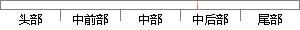

μ,∑)叫做这个模型的一个component，只要j取得足够大，这个xx Mixture Model就会变得足够复杂，就可以逼近任意连续的概率密度分布。
片段位置图

相似结果|
相似片段 1：在于不管是什么分布，只要K取得足够大，这个模型就会变得足够复杂，就可以用来逼近任意连续的概率密度分布。只是因为高斯函数具有良好的计算性能，所以被广泛应用。GMM是一种聚类算法，每个高斯就是一个聚类中心。即利用训练样本计算出模型参数(万，∥，占)，再用训练好的模型就可以去判别样本所属的分类。
相似片段 2：? ? ? ?? ? 。通过EM 算法进行迭代计算，可以求得最终的参数值。实际上无论什么分布，只 K取得足够大，这个 GMM 就会变得足够复杂，就可以用来逼近任意连续的概率密度分布。因此高斯混合模型经常被用于计算机
相似片段 3：够大，这个混合模型(MixtureModel)就会变得足够复杂，就可以用来逼近任意连续的概率密度分布。高斯函数因其良好的计算性能，被广泛地推广和应用。高斯混合模型(GMM)是一种聚类算法，每一个
|
※ 片段修改建议 ※
近似词参考：- 模型：模子
- 取得：获得
- 足够：充足
- 足够：充足
- 复杂：庞大 繁杂
- 就可以：就能够 就能
- 逼近：迫近 迫临 切近亲近
- 任意：肆意 随便 随意率性 恣意
- 连续：持续 继续 接连 连气儿 陆续 延续 一连
- 分布：散布 漫衍
系统自动生成语句：μ,∑)叫做这个模子的一个component，只要j获得充足大，这个xx Mixture Model就会变得充足庞大，就能够迫近肆意持续的概率密度散布。
注：本片段修改建议为系统自动生成，仅供参考。